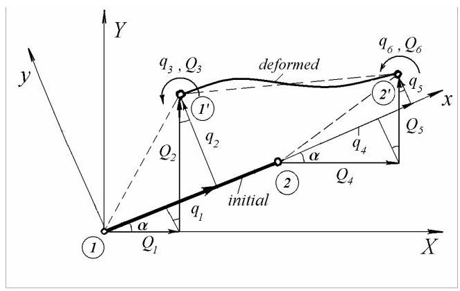
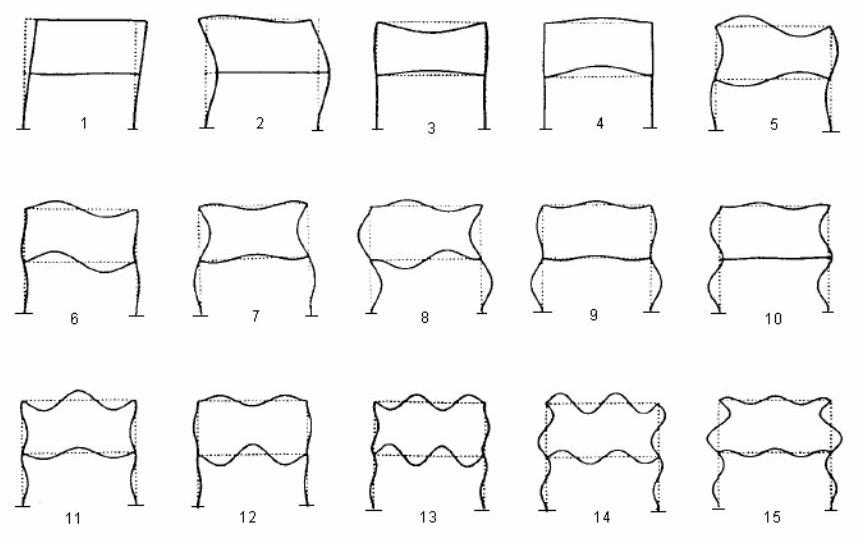
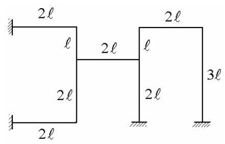
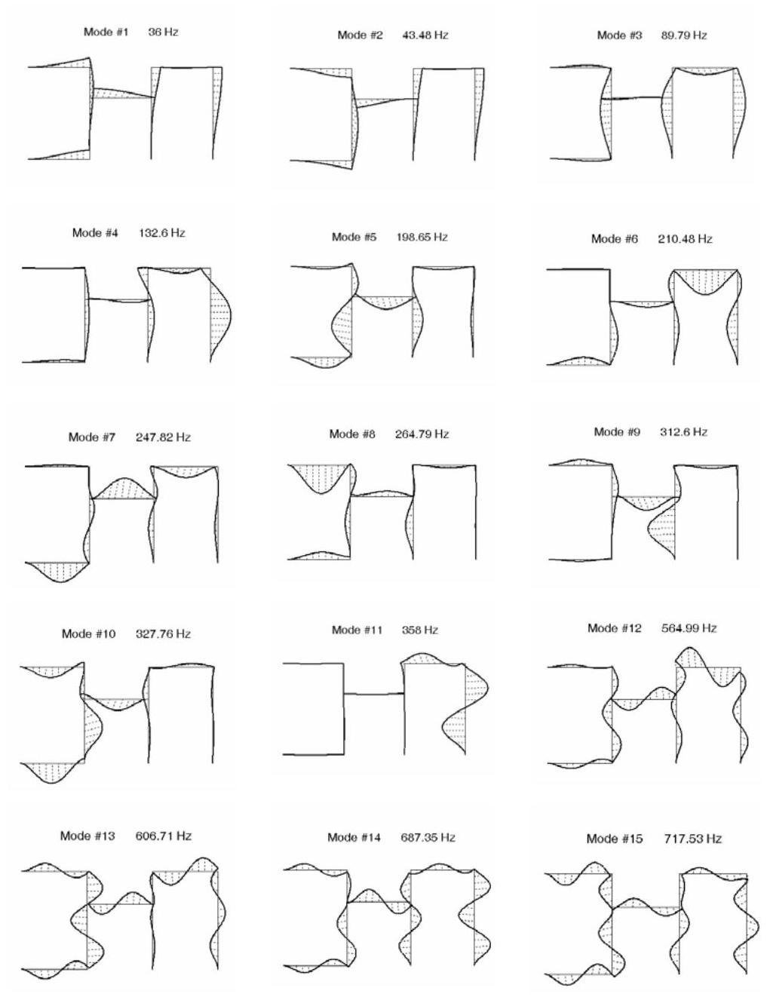
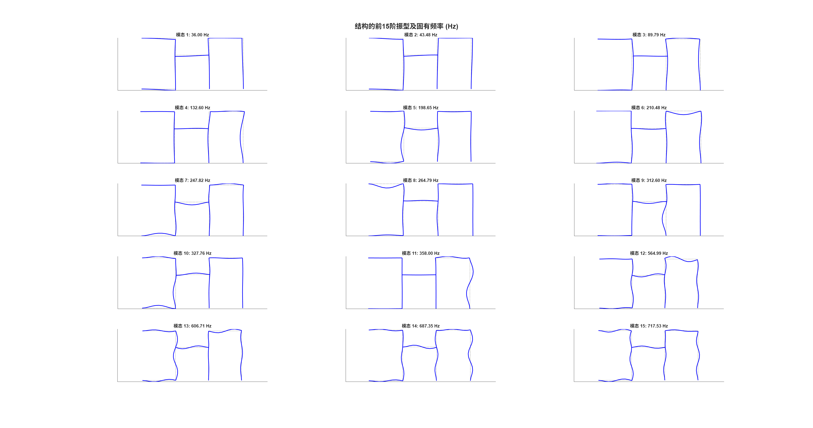

第27篇
5.3.4 梁单元刚度矩阵(Stiffness Matrix of a Beam Element)
梁单元的应变能\({U}_{e}\)为
由式(5.77)可得
代入(5.73)得
上述量的平方计算为
也可写成
将(5.76)和(5.84)代入(5.82)得单元应变能
其形式为
比较(5.85)与(5.86)得弯曲引起的单元刚度矩阵
或
代入形函数(5.81)并完成积分，得到局部坐标系下由弯曲引起的刚度矩阵
5.3.5 梁单元一致质量矩阵(Consistent Mass Matrix of a Beam Element)
在动力计算中，梁的横向挠度是空间与时间的函数，\(v = v\left( {x, t}\right)\)。
梁单元的瞬时动能为
其中\(\rho\)为单位体积材料质量，\(\partial v/\partial t = \dot{v}\)为\(x\)处的速度。
由(5.73)得
其中\(\left\{ {\dot{q}}^{e}\right\}\)为节点速度列向量。
将(5.76)和(5.91)代入方程(5.90)得到
其形式为
其中
为单元一致质量矩阵(consistent mass matrix)。
将形函数(5.81)代入并对其乘积积分，得到局部坐标系下的梁单元质量矩阵
该质量矩阵采用与刚度矩阵相同的方法推导，因此与刚度矩阵保持一致。
5.3.6 轴向效应
轴向节点力与节点位移的关系由方程给出
其中刚度矩阵(5.32)为
类似地，由(5.38)可得因拉伸产生的单元质量矩阵
5.3.7 局部坐标系下的框架单元矩阵
对于框架单元，将方程(5.97)与(5.89)组合并按适当位置排列，得到单元刚度矩阵
式(5.99)中弯曲项与拉伸项的比值量级为\({\left( i/\ell \right) }^{2}\)，其中“\(i\)”为相关回转半径(radius of gyration)。对于细长梁，该比值可小至\(1/{20}\)或\(1/{50}\)，因此刚度矩阵可能出现数值病态。
将方程(5.98)与(5.95)组合并按适当位置排列，得到框架单元的一致质量矩阵
5.3.8 坐标变换
图5.27展示了一个框架单元(frame element)在初始状态和变形状态下的情况。对于节点1，局部线位移\({q}_{1}\)和\({q}_{2}\)与全局线位移\({Q}_{1}\)和\({Q}_{2}\)的关系由以下方程给出

图5.27
方程(5.101)可写成矩阵形式
其中
称为旋转矩阵(rotation matrix)，\(c = \cos \alpha\)和\(s = \sin \alpha\)。
角位移(旋转)在两个坐标系中相同
为节点2添加类似关系
我们得到
其中\(\left\{ {q}^{e}\right\}\)为局部坐标系中的单元位移向量，\(\left\{ {Q}^{e}\right\}\)为全局坐标系中的单元位移向量，且
为局部到全局坐标变换矩阵。
5.3.9 全局坐标系中的框架单元矩阵
采用与\(\$ {5.2.4}\)相同的步骤，框架单元在全局坐标系中的刚度矩阵和质量矩阵可表示为
和
5.3.10 刚度矩阵与质量矩阵的组装
全局刚度矩阵和质量矩阵\(\left\lbrack K\right\rbrack\)和\(\left\lbrack M\right\rbrack\)由单元矩阵\(\left\lbrack {K}^{e}\right\rbrack\)和\(\left\lbrack {M}^{e}\right\rbrack\)通过单元连接矩阵\(\left\lbrack {\widetilde{T}}^{e}\right\rbrack\)组装而成，该矩阵通过如下形式的方程将单元级节点位移与整体结构级节点位移关联
全局未凝聚刚度矩阵等于扩展后的单元刚度矩阵之和
类似地，全局未凝聚质量矩阵\(\left\lbrack \bar{M}\right\rbrack\)由扩展后的单元质量矩阵组装而成，表达式为
对于接地系统，未缩减的刚度矩阵和质量矩阵\(\left\lbrack \bar{K}\right\rbrack\)与\(\left\lbrack \bar{M}\right\rbrack\)通过边界条件进行凝聚。
集中质量与弹簧的影响可通过在相应矩阵主对角线的适当位置叠加其数值来计入。当外载荷包含分布力时，这些分布力被替换为运动学等效的节点力，其计算过程与刚度矩阵和质量矩阵的推导保持一致，并假设静力形函数有效。
一旦质量矩阵、刚度矩阵和力向量均已导出，即可认为运动方程已推导完成。
例5.10
计算图5.28所示平面框架的前15阶固有频率和振型，其中所有梁的\(E = {207}\mathrm{{GPa}},\rho = {7810}\mathrm{\;{kg}}/{\mathrm{m}}^{3}, I = {271}{\mathrm{\;{mm}}}^{4}\)和\(A = {80.6}{\mathrm{\;{mm}}}^{2}\)均相同。框架宽\({606.9}\mathrm{\;{mm}}\)、高\({606.9}\mathrm{\;{mm}}\)，由两根竖柱和两根等间距横梁组成。
解:由于对称性，只需考虑框架的一半，并对对称与反对称模态分别施加适当的约束。
每一半平面用16个相同的平面梁单元建模，其中柱用8个单元，每根半横梁用4个单元。

图5.28
计算得到的最低15阶固有频率(单位:rad/s)如下:107.20、377.47、397.25、475.73、1099.3、1316.2、1504.0、1911.6、2061.4、2447.5、2695.0、2903.7、4171.1、4618.3和4943.6。
振型如图5.28所示。
Example 5.11
例5.11
计算图5.29所示框架平面振动的前15阶固有频率和振型，其中\(E = {210}\mathrm{{GPa}}\)、\(\rho = {7850}\mathrm{\;{kg}}/{\mathrm{m}}^{3}, I = {1.055} \cdot {10}^{-7}{\mathrm{\;m}}^{4}, A = {3.73} \cdot {10}^{-4}{\mathrm{\;m}}^{2}\)和\(\ell = {0.5}\mathrm{\;m}\)。

图5.29

图5.30
解答。每段长度为\(\ell\)的区段用5个相同的梁单元建模，整个框架共85个单元，因此有86个节点。除去4个固定节点，每个节点具有3个自由度，凝聚后的系统矩阵阶数为246。计算得到的振型如图5.30所示，并给出了相应固有频率的取整值。
Matlab Demo

clear;
clc;
close all;
%% 1. 定义属性和常量 (国际单位制)
E = 210e9; % 弹性模量 (Pa)
rho = 7850; % 密度 (kg/m^3)
I = 1.055e-7; % 截面惯性矩 (m^4)
A = 3.73e-4; % 截面面积 (m^2)
l = 0.5; % 基本长度单位 (m)
num_modes_to_find = 15; % 需要求解和绘制的模态数量
% 用户提供的参考频率 (单位: Hz)
reference_frequencies_Hz = [36, 43.48, 89.79, 132.6, 198.65, 210.48, 247.82, 264.79, 312.6, 327.76, 358, 564.99, 606.71, 687.35, 717.53];
%% 2. 定义几何并进行离散化
% 定义10个主要顶点的坐标，V7为原点(0,0)
V = [
-4*l, 3*l; % V1: 左上固定支撑
-2*l, 3*l; % V2: 左上角点
-2*l, 2*l; % V3: 左侧T型连接点
-2*l, 0; % V4: 左下角点
-4*l, 0; % V5: 左下固定支撑
0, 2*l; % V6: 中部T型连接点
0, 0; % V7: 中下固定支撑 (原点)
0, 3*l; % V8: 右侧T型连接点
2*l, 3*l; % V9: 右上角点
2*l, 0 % V10: 右下固定支撑
];
% 定义连接顶点的9个主要杆件
segments = [1,2; 2,3; 3,4; 4,5; 3,6; 6,7; 6,8; 8,9; 9,10];
segment_lens_in_l = [2, 1, 2, 2, 2, 2, 1, 2, 3]; % 各杆件长度 (以l为单位)
% 离散化
elems_per_l = 5;
node_coords = V;
elem_nodes = [];
last_node_idx = size(V, 1);
fprintf('正在基于修正后的拓扑结构 (10顶点, 9杆件) 进行离散化...\n');
for i = 1:size(segments, 1)
start_v_idx = segments(i, 1); end_v_idx = segments(i, 2);
num_elems_in_seg = segment_lens_in_l(i) * elems_per_l;
p_start = V(start_v_idx, :); p_end = V(end_v_idx, :);
current_node_idx = start_v_idx;
for j = 1:num_elems_in_seg
p_new = p_start + (p_end - p_start) * j / num_elems_in_seg;
if j == num_elems_in_seg
next_node_idx = end_v_idx;
else
node_coords = [node_coords; p_new];
last_node_idx = last_node_idx + 1;
next_node_idx = last_node_idx;
end
elem_nodes = [elem_nodes; current_node_idx, next_node_idx];
current_node_idx = next_node_idx;
end
end
% 清理和重建节点与单元索引
[unique_nodes, ~, node_map] = unique(node_coords, 'rows', 'stable');
elem_nodes = node_map(elem_nodes);
node_coords = unique_nodes;
num_nodes = size(node_coords, 1); num_elems = size(elem_nodes, 1);
total_dofs = 3 * num_nodes;
fprintf('模型创建完成: %d 个节点, %d 个单元。\n', num_nodes, num_elems);
%% 3. 组装全局刚度矩阵和质量矩阵
K_global = zeros(total_dofs); M_global = zeros(total_dofs);
fprintf('正在组装全局矩阵...\n');
for i = 1:num_elems
n1_idx = elem_nodes(i, 1); n2_idx = elem_nodes(i, 2);
p1 = node_coords(n1_idx, :); p2 = node_coords(n2_idx, :);
dx = p2(1) - p1(1); dy = p2(2) - p1(2);
Le = sqrt(dx^2 + dy^2); c = dx / Le; s = dy / Le;
k_axial=E*A/Le; k_flex_1=12*E*I/Le^3; k_flex_2=6*E*I/Le^2; k_flex_3=4*E*I/Le; k_flex_4=2*E*I/Le;
ke = [k_axial,0,0,-k_axial,0,0; 0,k_flex_1,k_flex_2,0,-k_flex_1,k_flex_2; 0,k_flex_2,k_flex_3,0,-k_flex_2,k_flex_4;
-k_axial,0,0,k_axial,0,0; 0,-k_flex_1,-k_flex_2,0,k_flex_1,-k_flex_2; 0,k_flex_2,k_flex_4,0,-k_flex_2,k_flex_3];
m_factor = rho*A*Le/420;
me = m_factor * [140,0,0,70,0,0; 0,156,22*Le,0,54,-13*Le; 0,22*Le,4*Le^2,0,13*Le,-3*Le^2;
70,0,0,140,0,0; 0,54,13*Le,0,156,-22*Le; 0,-13*Le,-3*Le^2,0,-22*Le,4*Le^2];
T_block = [c,s,0; -s,c,0; 0,0,1]; Te = blkdiag(T_block, T_block);
Ke = Te' * ke * Te; Me = Te' * me * Te;
dof_indices = [3*n1_idx-2:3*n1_idx, 3*n2_idx-2:3*n2_idx];
K_global(dof_indices, dof_indices) = K_global(dof_indices, dof_indices) + Ke;
M_global(dof_indices, dof_indices) = M_global(dof_indices, dof_indices) + Me;
end
%% 4. 施加边界条件
% 更新固定支撑的顶点编号为 V1, V5, V7, V10
clamp_node_indices = node_map([1, 5, 7, 10]);
fixed_dofs = [];
for node_idx = clamp_node_indices'
fixed_dofs = [fixed_dofs, 3*node_idx-2, 3*node_idx-1, 3*node_idx];
end
free_dofs = setdiff(1:total_dofs, unique(fixed_dofs));
K_condensed = K_global(free_dofs, free_dofs);
M_condensed = M_global(free_dofs, free_dofs);
fprintf('系统缩减至 %d 个自由度。\n', length(free_dofs));
%% 5. 求解广义特征值问题
fprintf('正在求解前 %d 阶模态...\n', num_modes_to_find);
opts.isreal=true; opts.issym=true;
[eigenvectors, eigenvalues] = eigs(K_condensed, M_condensed, num_modes_to_find, 'sm', opts);
omega_sq = diag(eigenvalues);
[sorted_omega_sq, sort_idx] = sort(omega_sq);
sorted_eigenvectors = eigenvectors(:, sort_idx);
natural_freq_Hz = sqrt(sorted_omega_sq) / (2*pi);
%% 6. 显示结果并与参考值比较
error_percent = abs(natural_freq_Hz - reference_frequencies_Hz') ./ reference_frequencies_Hz' * 100;
fprintf('\n--- 计算完成 ---\n');
fprintf('前 %d 阶固有频率对比 (单位: Hz):\n', num_modes_to_find);
disp('-----------------------------------------------------------');
fprintf(' 模态 | 计算频率 (Hz) | 您的参考值 | 相对误差 (%%)\n');
disp('-----------------------------------------------------------');
for i = 1:num_modes_to_find
fprintf(' %4d | %17.2f | %13.2f | %12.2f\n', ...
i, natural_freq_Hz(i), reference_frequencies_Hz(i), error_percent(i));
end
disp('-----------------------------------------------------------');
%% 7. 绘制振型图
fprintf('\n正在绘制振型图...\n');
full_eigenvectors = zeros(total_dofs, num_modes_to_find);
full_eigenvectors(free_dofs, :) = sorted_eigenvectors;
max_coord = max(abs(node_coords(:)));
max_disp = max(abs(full_eigenvectors(:)));
scale_factor = 0.25 * max_coord / max_disp;
figure('Name', '前15阶振型图 (拓扑修正版)', 'NumberTitle', 'off', 'WindowState', 'maximized');
sgtitle('结构的前15阶振型及固有频率 (Hz)', 'FontSize', 16, 'FontWeight', 'bold');
for i = 1:num_modes_to_find
subplot(5, 3, i);
hold on;
for j = 1:num_elems
n1=elem_nodes(j,1); n2=elem_nodes(j,2);
plot([node_coords(n1,1),node_coords(n2,1)], [node_coords(n1,2),node_coords(n2,2)], '--', 'Color', [0.6 0.6 0.6]);
end
deformed_coords = node_coords;
deformed_coords(:,1) = deformed_coords(:,1) + scale_factor * full_eigenvectors(1:3:end, i);
deformed_coords(:,2) = deformed_coords(:,2) + scale_factor * full_eigenvectors(2:3:end, i);
for j = 1:num_elems
n1=elem_nodes(j,1); n2=elem_nodes(j,2);
plot([deformed_coords(n1,1),deformed_coords(n2,1)], [deformed_coords(n1,2),deformed_coords(n2,2)], 'b-', 'LineWidth', 1.5);
end
title(sprintf('模态 %d: %.2f Hz', i, natural_freq_Hz(i)));
axis equal; grid on;
set(gca, 'XTick', [], 'YTick', []);
hold off;
end